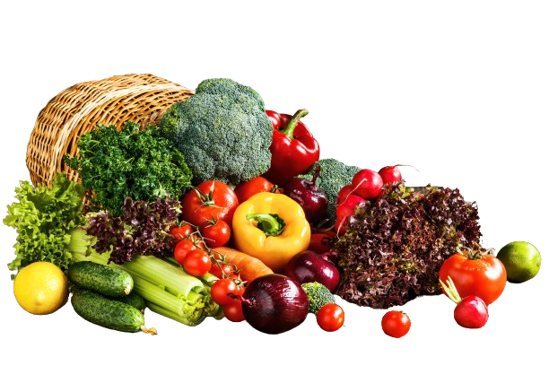

Bem-Vidos HortFood
Horta orgânica, venha nos conhecer!
Cultivar uma horta orgânica é uma atividade terapêutica e gratificante. Ela nos conecta com a terra, nos ensina sobre ciclos naturais e nos proporciona momentos de tranquilidade.
Fale com Nosco
